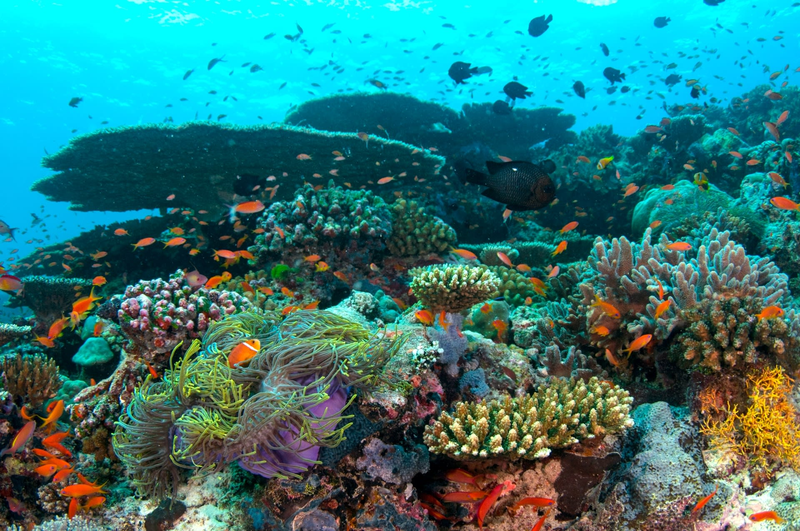
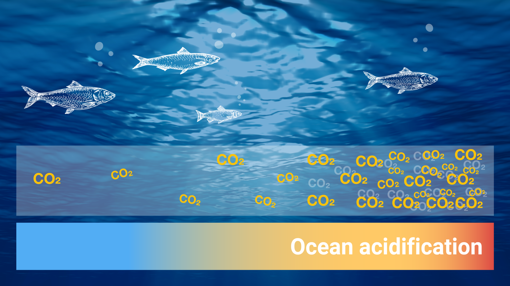

One of the most visible impacts of biodiversity loss in the oceans is coral bleaching, which is caused by rising ocean temperatures. Coral reefs are among the top biodiverse ecosystems on earth, supporting almost one-quarter of all marine species. When coral reefs bleach, they become more vulnerable to disease and death, which leads to the loss of entire reef ecosystems. The Great Barrier Reef, for example, has experienced three mass bleaching events in the past five years, killing about half of the coral in the northern and central sections of the reef.
Aim to maintain fish populations at healthy levels while minimizing the impact on marine ecosystems. These methods include regulating catch limits, using selective fishing gear that reduces bycatch, and protecting critical habitats such as breeding and nursery areas. Techniques like pole-and-line fishing, circle hooks, and turtle excluder devices help ensure non-target species are less affected. Sustainable practices also involve enforcing seasonal closures and marine protected areas to allow fish stocks to recover. Certification programs, like the Marine Stewardship Council (MSC), guide consumers toward responsibly sourced seafood. By adopting sustainable fishing practices, we can support the livelihoods of fishing communities and preserve marine biodiversity for future generations.


Restoration of coral reefs focuses on reviving damaged reef ecosystems that support marine life and protect coastlines. Techniques like coral gardening, where fragments are grown and transplanted, and using artificial structures help rebuild reefs. New methods, such as micro-fragmentation and cultivating heat-resistant corals, are also being used. These efforts, along with reducing pollution and carbon emissions, are vital to preserving coral reefs for future generations.
Reducing ocean acidification involves cutting carbon dioxide (CO₂) emissions, as excess CO₂ absorbed by the oceans lowers pH levels and harms marine life. Solutions include shifting to renewable energy, improving energy efficiency, and protecting marine habitats like seagrasses and mangroves that absorb carbon. Global efforts to reduce greenhouse gases are essential to slowing ocean acidification and protecting marine ecosystems.
